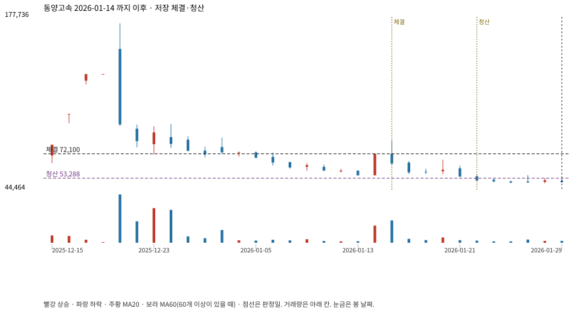

계좌를 다시 돌리지 않았다. 아래는 저장된 주문·체결·청산·비용·손익이다.

{
"case_id": "4f9f94b0735fea5f",
"status": "closed",
"trade": {
"symbol": "084670.KS",
"signal_date": "2026-01-14",
"quantity": 54,
"entry": 72100,
"stop": 53315,
"target": 172800,
"planned_risk": 1022600.4754949994,
"reserved_cash": 3897293.3999999994,
"fill": {
"date": "2026-01-15",
"price": 72100,
"fee": 3893.4
},
"exit": {
"date": "2026-01-22",
"price": 53288.3425,
"reason": "stop",
"net_pnl": -1022600.4754949994,
"ambiguous_bar": false
}
},
"cost": "research fee 10bp each side, slippage 5bp; amounts below are the stored ledger, not a new run",
"chart": "c\/4f9f94b0735fea5f.svg"
}